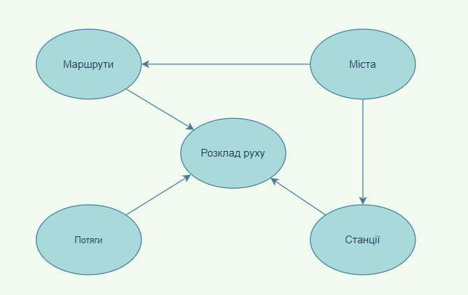

Концептуальний рівень представлення моделі бази даних відображає абстрактне уявлення даних предметної області в структурах, що відображають атрибутивний складу кожного елемента (об'єкта) моделі і особливості зв'язків між ними.
На рівні моделі термін "Відношення" з реляційної алгебри уточнюється шляхом виділення в окремий термінологічний елемент "Сутність" відносин, що описують конкретний об'єкт предметної області з фіксованим набором атрибутів, а терміном "Відношення" називаються уявлення, одержувані при взаємодії пов'язаних сутностей.
В даній базі даних було представлено 5 об'єктів, які були представленні елементами
Міста - адміністративна одиниця, населений пункт.
Станції - назва станції в населеному пункті.
Потяги - номери потягів та компанії перевізника.
Маршрути - шлях курсування потягу у форматі місто початку руху - місто завершення шляху.
Розклад руху - сукупна інформація про час, місце та маршрут певних потягів.
Отже, наша БД повинна зберігати перелік міст та назв станцій в них, перелік потягів та їх компанії перевізників, маршрут руху і час відбуття в певній станції.